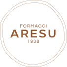

Moodboard shootingLe reference per lo shooting di Formaggi Aresu e il tipo di fotografia che cerchiamo per ognuna delle tre famiglie di scatti. Le immagini sono riferimenti di luce, taglio e atmosfera, non scatti da copiare.
Fotografia sobria e curata, con poche cose in scena e ognuna scelta. Persone vere del caseificio, i loro luoghi, i formaggi. Il formaggio resta il centro della scena, anche nei ritratti. La palette delle foto è quella del marchio, presa dalle croste: panna, sabbia, arancio, marrone, cacao.
Un soggetto per scatto, fondi puliti, molta aria intorno. Pochi oggetti di scena e solo materiali naturali: legno, pietra, lino.
Una sola fonte, calda e radente: finestra, porta della cella, lampada bassa. Ombre profonde ma con dettaglio. Mai flash frontale, mai luce fredda.
Toni di crosta: ambra, miele, terra, nocciola. Neri morbidi che tendono al cacao, bianchi caldi.
In divisa da lavoro (casacca, grembiule), non in posa da catalogo. Sguardi in camera alternati a momenti rubati durante il lavoro.
Diaframmi aperti, primi piani sfocati, scaffali che fuggono in prospettiva. La cella si legge anche quando è fuori fuoco.